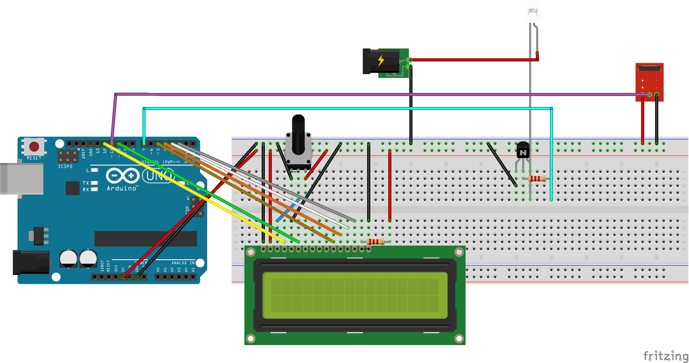
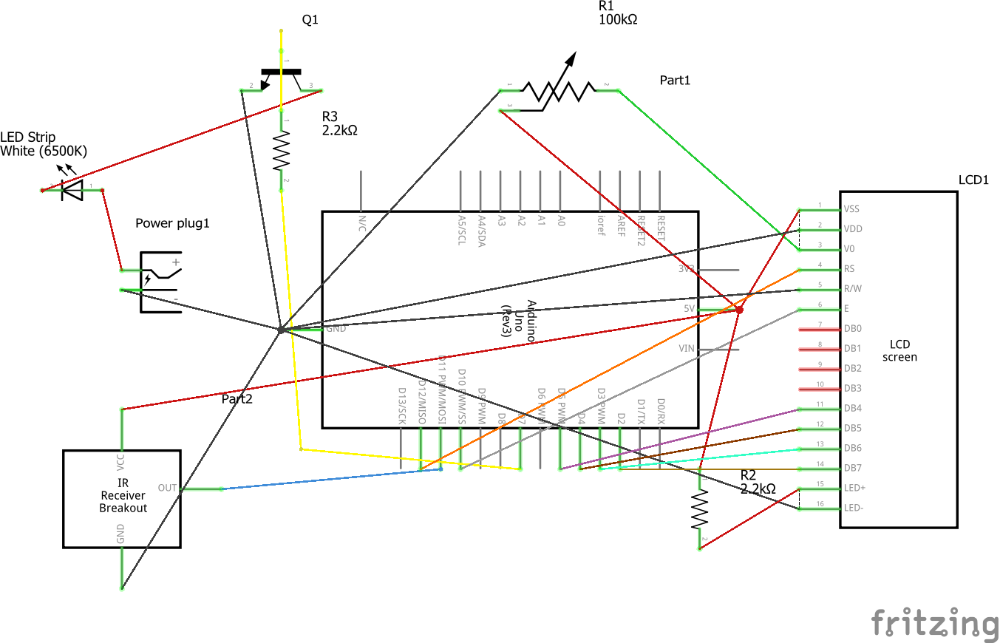
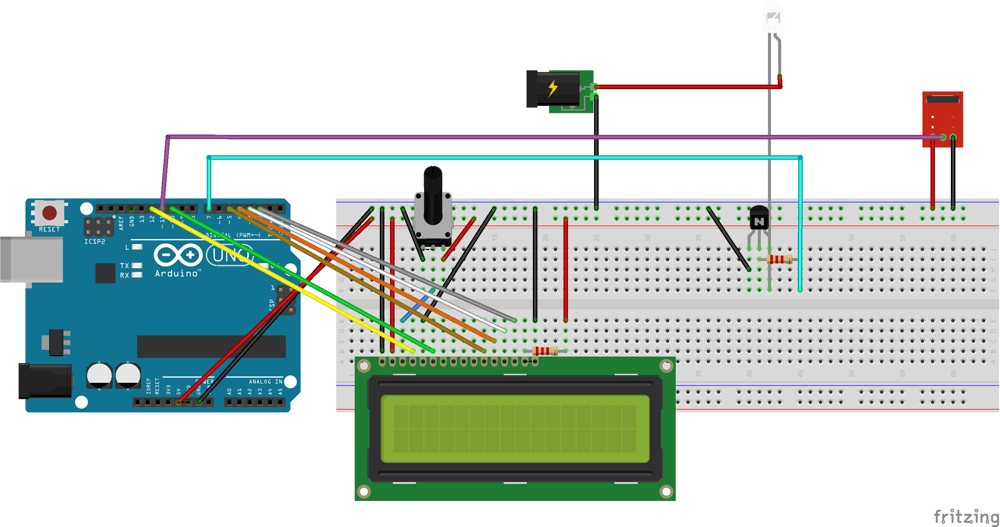
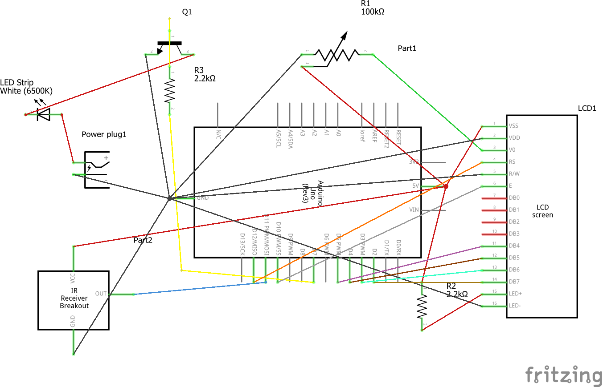

Zach Thomas Assignment 6!

 Here is the functionality of the circuit. The infrared from the controller is picked up by the Reciever module turning the LED strip and LCD screen on or off,
as well as updating the computer screen with the status of the system. The letters typed on the computer will show up on the lcd screen until the "\" character
is pressed wiping the screen or if the maximum 16 characters is exceeded the screen will be wiped.

Here is a picture of the full circuitry

Here is a diagram of the circuit. The LCD screen is wired in to a potentiometer that adjusts the brightness. There is a resistor between part of the LCD and the Arduino
that prevents too much current flowing through either piece. The Infrared receiver needs no resistor for its circuitry. The LED strip is wired in to a 12 Volt power supply
with a transistor to control the flow through the strip with the Arduino.
Here is the functionality of the circuit. The infrared from the controller is picked up by the Reciever module turning the LED strip and LCD screen on or off,
as well as updating the computer screen with the status of the system. The letters typed on the computer will show up on the lcd screen until the "\" character
is pressed wiping the screen or if the maximum 16 characters is exceeded the screen will be wiped.

Here is a picture of the full circuitry

Here is a diagram of the circuit. The LCD screen is wired in to a potentiometer that adjusts the brightness. There is a resistor between part of the LCD and the Arduino
that prevents too much current flowing through either piece. The Infrared receiver needs no resistor for its circuitry. The LED strip is wired in to a 12 Volt power supply
with a transistor to control the flow through the strip with the Arduino.
Arduino Code
#include
#include
LiquidCrystal lcd(12,10,5,4,3,2); // Initializing the lcd
const int RECV_PIN = 11; // initializing the pin for the IR receiver
IRrecv irrecv(RECV_PIN); // initializing the IR receiver
decode_results results; // initializing the decoder for the IR receiver
boolean on = false; // boolean for if the system is on or not
void setup(){
Serial.begin(9600); // Start the Serial functionality
Serial.setTimeout(10);
pinMode(7, OUTPUT); // Output pin for the LED Strip
irrecv.enableIRIn();
irrecv.blink13(true);
lcd.begin(16,2); // The LCD screen has 16 columns and 2 rows
}
int count = 0; // Count for how many characters are on the LCD screen
void loop(){
if (Serial.available() > 0) {
if(count >= 16) { // If there are more than 16 characters clear the screen
lcd.clear();
count = 0;
}
lcd.setCursor(count,0); // Set the cursor to the next column
int inByte = Serial.read(); // Get the Serial value from the computer
if(inByte == 92) { // If "\" is typed, reset the LCD screen
lcd.clear();
count = 0;
} else { // Output the given value to the LCD screen
lcd.write(inByte);
Serial.write(inByte); // Send the value back to the computer
count++; // Incriment the count
}
}
if (irrecv.decode(&results)){ // If the IR receiver is getting a signal
Serial.println(results.value); // Output the value of the receiver
if(results.value == 16753245) { // If the value is "power"
if(on) { // if the system is on turn it off
digitalWrite(7, LOW);
on = false;
lcd.noDisplay();
} else { // if the system is off turn it on
digitalWrite(7, HIGH);
on = true;
lcd.display();
}
}
Serial.write(on); // Tell the computer if the system turned on or off
irrecv.resume();
}
}
sketch.js
var sevar serial; // variable to hold an instance of the serialport library
var portName = 'com11' //rename to the name of your port
var datain; //some data coming in over serial!
var xPos = 0;
function setup() {
serial = new p5.SerialPort(); // make a new instance of the serialport library
serial.on('list', printList); // set a callback function for the serialport list event
serial.on('connected', serverConnected); // callback for connecting to the server
serial.on('open', portOpen); // callback for the port opening
serial.on('data', serialEvent); // callback for when new data arrives
serial.on('error', serialError); // callback for errors
serial.on('close', portClose); // callback for the port closing
serial.list(); // list the serial ports
serial.open(portName); // open a serial port
createCanvas(1200, 800);
background(0x08, 0x16, 0x40);
}
// get the list of ports:
function printList(portList) {
// portList is an array of serial port names
for (var i = 0; i < portList.length; i++) {
// Display the list the console:
print(i + " " + portList[i]);
}
}
function serverConnected() {
print('connected to server.');
}
function portOpen() {
print('the serial port opened.')
}
function serialError(err) {
print('Something went wrong with the serial port. ' + err);
}
function portClose() {
print('The serial port closed.');
}
function serialEvent() {
if (serial.available()) {
datain = serial.read();
console.log("got back " + datain);
}
}
function keyPressed() {
//console.log("writing key");
console.log(key);
serial.write(key);
}
function draw() {
background(0);
fill(255);
if(datain == 1) {
text("System Status: On", 30, 30);
} else if(datain == 0) {
text("System Status: Off", 30, 30);
} else {
text(String(String.fromCharCode(datain)), 30, 30);
}
}